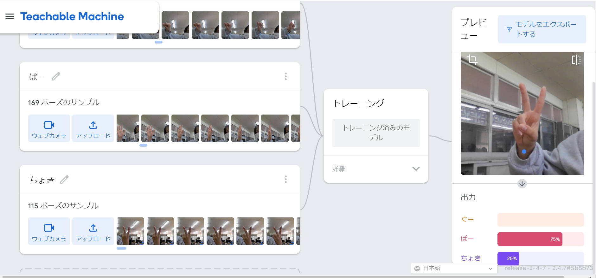

第2週目
2-1 １週目のレポートをHTMLで作る
１週目のレポート
1.内容
GitHubでHTMLを使用しレポートを作成した。
2.感想
もともとつくられたレポートを編集して作成しただけだったがとても難しく、1から作れるようになろうと思った。
2-2 機械学習体験

1.内容
ウェブカメラを使用してグーチョキパーの判別をするようにパソコンに学習させた。
2.感想
それぞれ約150枚ずつ写真を撮って学習させたけど完璧に判別させることはできなかったがある程度はできた。近づいたり離れたり、顔が映っていたりすると全く異なった認識になるためより多くのパターンを学習させ精度を上げたいと思った。
2-3 VR（バーチャルリアリティー：Virtual Reality）会議室の体験
1.内容
VRゴーグルを使ってクラスの何人かがいる会議室へ行った。
2.感想
初めてVRを体験したけど意外と操作も簡単でとても楽しかった。自分1人だけが存在する世界じゃなくて周りで一緒にVRゴーグルをつけている人とつながっており、その人たちの声や動き、ホワイトボードに書いていることが連動していた。どうやってつながっているのか学びたいと思った。